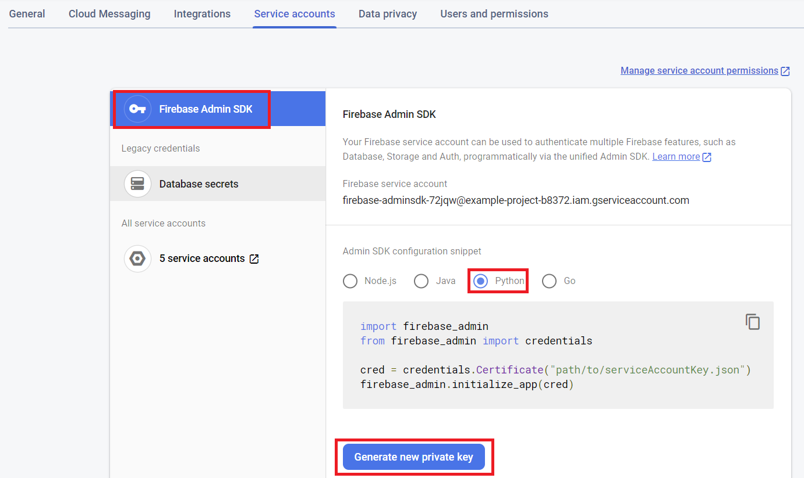
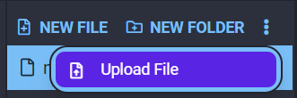
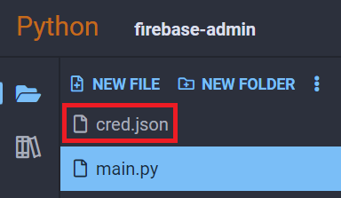

firebase-admin
firebase-admin is a Python library that allows for accessing and interacting with Firebase projects. In particular, Firebase offers a free realtime database service that we can use to store and access data from Python3 Editor projects.
Note
You need to have an active Google account and project on Firebase to use this package. For a guide on how to set one up with a realtime database activated, check our cloud services guide to Firebase:
Warning
When including private database credentials in your code, make sure you DO NOT make your project "Open Source" when you share it.
Connecting to Your Realtime Database
To use this library, you must have an active and setup Firebase account with a realtime database set up. You can create one and set it up following the guide linked above.
Downloading Your Credentials JSON
First, go to the left side of the Firebase UI and find the gear icon next to the Project Overview label. Then, click on Project Settings:

From there, click on the Service Accounts tab on the top, make sure Firebase Admin SDK is selected, then click on Generate new private key. This will download a .json file that we will need to upload to the Python3 Editor:

Note
Do not share this file with anybody else. It would give them full access to your database in a way you cannot control.
Uploading Your Credentials JSON to Your Project
At the top of your project's file list in Python3 Editor, click on the dropdown menu and select Upload File:


Find the credentials file in your computer's file browser, and we can rename it to cred.json:

Examples
In all the following examples, you must have a credentials JSON file uploaded to your project somewhere. To keep it simple, we're using a file named cred.json in our project's root path.
Creating a Document
Let's create a couple of documents to insert into our Firebase. We can add documents in dictionary form:
import firebase_admin
from firebase_admin import db
cred_obj = firebase_admin.credentials.Certificate('cred.json')
default_app = firebase_admin.initialize_app(cred_obj, {
'databaseURL': 'https://<YOUR DATABASE URL>.firebaseio.com/'
})
ref = db.reference('/')
data = {
"Cat1": {
"Name": 'Simba',
"Age": 12
},
"Cat2": {
"Name": 'Chickpea',
"Age": 3
}
}
ref.set(data)
If we look at our Firebase now, we can see the data has been inserted:

Reading a Document
We can retrieve our data with the db reference's get() method:
import firebase_admin
from firebase_admin import db
cred_obj = firebase_admin.credentials.Certificate('cred.json')
default_app = firebase_admin.initialize_app(cred_obj, {
'databaseURL': 'https://<YOUR DATABASE URL>.firebaseio.com/'
})
ref = db.reference('/')
cat1 = ref.get()['Cat1']
print(cat1)
Output:
{'Age': 12, 'Name': 'Simba'}
Updating a Document
We can update a document key by using a reference's update() method:
import firebase_admin
from firebase_admin import db
cred_obj = firebase_admin.credentials.Certificate('cred.json')
default_app = firebase_admin.initialize_app(cred_obj, {
'databaseURL': 'https://<YOUR DATABASE URL>.firebaseio.com/'
})
# We only want to update Cat1
cat1_ref = db.reference("/Cat1")
# Before read
print(cat1_ref.get())
# Perform update
data = {
'Age': 13
}
cat1_ref.update(data)
# After read
print(cat1_ref.get())
Output:
{'Age': 12, 'Name': 'Simba'}
{'Age': 13, 'Name': 'Simba'}
Deleting a Document
Finally, we can delete a document by calling the delete() method on a reference to it:
import firebase_admin
from firebase_admin import db
cred_obj = firebase_admin.credentials.Certificate('cred.json')
default_app = firebase_admin.initialize_app(cred_obj, {
'databaseURL': 'https://example-project-b8372-default-rtdb.firebaseio.com/'
})
cat1_ref = db.reference("Cat1") # Get our Cat1
print(cat1_ref.get()) # Print it out
cat1_ref.delete() # Delete from Firebase
print(cat1_ref.get()) # Try to read it again
Output:
{'Age': 13, 'Name': 'Simba'}
None
Reference
- Firebase Admin Python SDK at firebase.google.com